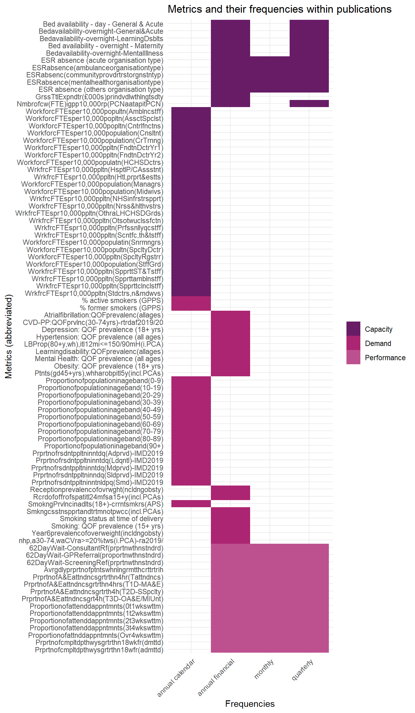
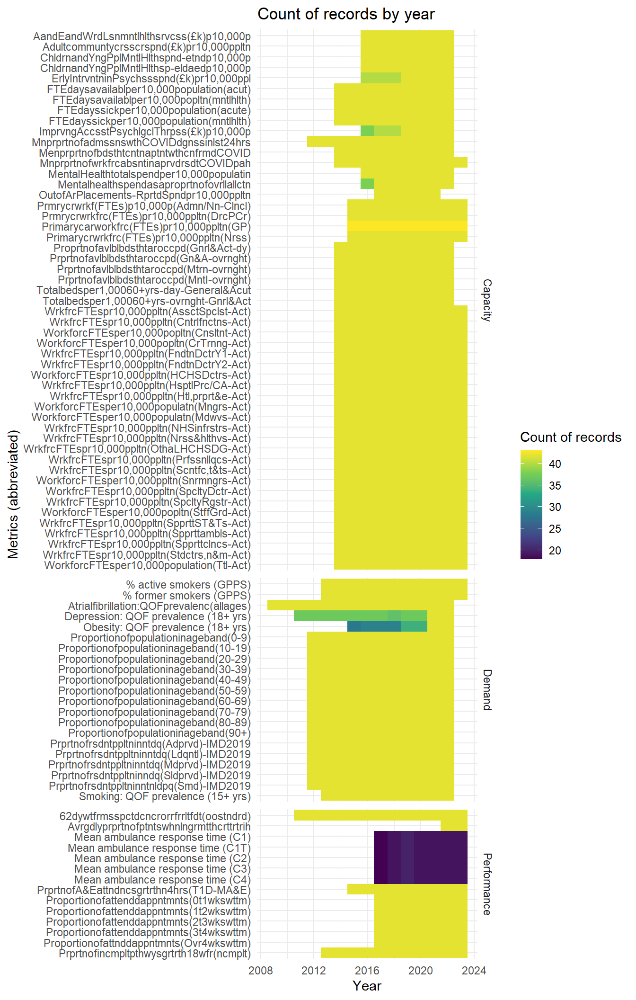
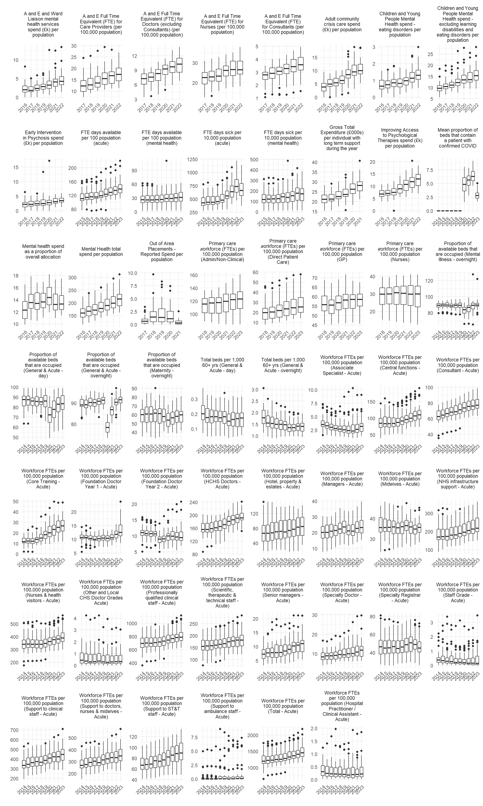
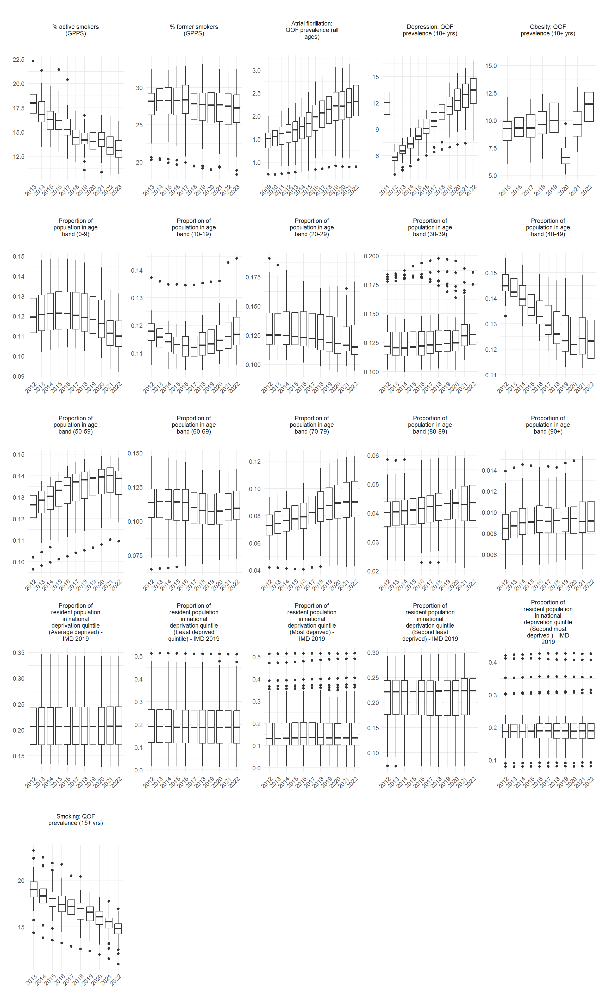
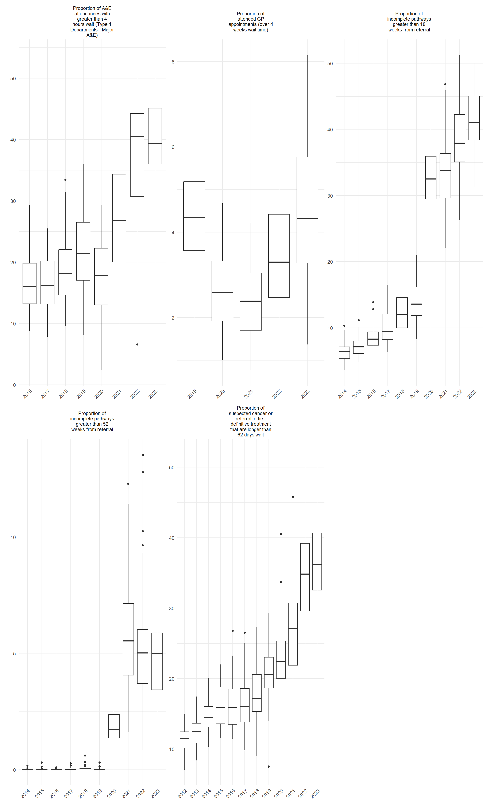

| domain | metric |
|---|---|
| Capacity | Bed availability - day - General & Acute |
| Capacity | Bed availability - overnight - General & Acute |
| Capacity | Bed availability - overnight - Learning Disabilities |
| Capacity | Bed availability - overnight - Maternity |
| Capacity | Bed availability - overnight - Mental Illness |
| Capacity | ESR absence (acute organisation type) |
| Capacity | ESR absence (ambulance organisation type) |
| Capacity | ESR absence (community provider trust organisation type) |
| Capacity | ESR absence (mental health organisation type) |
| Capacity | ESR absence (others organisation type) |
| Capacity | Gross Total Expenditure (£000s) per individual with long term support during the year |
| Capacity | Number of clinical workforce (FTE) in general practice per 10,000 registered patients (PCN average applied to all practices in the PCN) |
| Capacity | Workforce FTEs per 10,000 population (Ambulance staff) |
| Capacity | Workforce FTEs per 10,000 population (Associate Specialist) |
| Capacity | Workforce FTEs per 10,000 population (Central functions) |
| Capacity | Workforce FTEs per 10,000 population (Consultant) |
| Capacity | Workforce FTEs per 10,000 population (Core Training) |
| Capacity | Workforce FTEs per 10,000 population (Foundation Doctor Year 1) |
| Capacity | Workforce FTEs per 10,000 population (Foundation Doctor Year 2) |
| Capacity | Workforce FTEs per 10,000 population (HCHS Doctors) |
| Capacity | Workforce FTEs per 10,000 population (Hospital Practitioner / Clinical Assistant) |
| Capacity | Workforce FTEs per 10,000 population (Hotel, property & estates) |
| Capacity | Workforce FTEs per 10,000 population (Managers) |
| Capacity | Workforce FTEs per 10,000 population (Midwives) |
| Capacity | Workforce FTEs per 10,000 population (NHS infrastructure support) |
| Capacity | Workforce FTEs per 10,000 population (Nurses & health visitors) |
| Capacity | Workforce FTEs per 10,000 population (Other and Local HCHS Doctor Grades) |
| Capacity | Workforce FTEs per 10,000 population (Other staff or those with unknown classification) |
| Capacity | Workforce FTEs per 10,000 population (Professionally qualified clinical staff) |
| Capacity | Workforce FTEs per 10,000 population (Scientific, therapeutic & technical staff) |
| Capacity | Workforce FTEs per 10,000 population (Senior managers) |
| Capacity | Workforce FTEs per 10,000 population (Specialty Doctor) |
| Capacity | Workforce FTEs per 10,000 population (Specialty Registrar) |
| Capacity | Workforce FTEs per 10,000 population (Staff Grade) |
| Capacity | Workforce FTEs per 10,000 population (Support to ST&T staff) |
| Capacity | Workforce FTEs per 10,000 population (Support to ambulance staff) |
| Capacity | Workforce FTEs per 10,000 population (Support to clinical staff) |
| Capacity | Workforce FTEs per 10,000 population (Support to doctors, nurses & midwives) |
| Demand | % active smokers (GPPS) |
| Demand | % former smokers (GPPS) |
| Demand | Atrial fibrillation: QOF prevalence (all ages) |
| Demand | CVD-PP: QOF prevalence (30-74 yrs) - retired after 2019/20 |
| Demand | Depression: QOF prevalence (18+ yrs) |
| Demand | Hypertension: QOF prevalence (all ages) |
| Demand | Last BP reading of patients (80+ yrs, with hypertension), in the last 12 months is <= 150/90 mmHg (denominator incl. PCAs) |
| Demand | Learning disability: QOF prevalence (all ages) |
| Demand | Mental Health: QOF prevalence (all ages) |
| Demand | Obesity: QOF prevalence (18+ yrs) |
| Demand | Patients (aged 45+ yrs), who have a record of blood pressure in the last 5 yrs (denominator incl. PCAs) |
| Demand | Proportion of population in age band (0-9) |
| Demand | Proportion of population in age band (10-19) |
| Demand | Proportion of population in age band (20-29) |
| Demand | Proportion of population in age band (30-39) |
| Demand | Proportion of population in age band (40-49) |
| Demand | Proportion of population in age band (50-59) |
| Demand | Proportion of population in age band (60-69) |
| Demand | Proportion of population in age band (70-79) |
| Demand | Proportion of population in age band (80-89) |
| Demand | Proportion of population in age band (90+) |
| Demand | Proportion of resident population in national deprivation quintile (Average deprived) - IMD 2019 |
| Demand | Proportion of resident population in national deprivation quintile (Least deprived quintile) - IMD 2019 |
| Demand | Proportion of resident population in national deprivation quintile (Most deprived) - IMD 2019 |
| Demand | Proportion of resident population in national deprivation quintile (Second least deprived) - IMD 2019 |
| Demand | Proportion of resident population in national deprivation quintile (Second most deprived ) - IMD 2019 |
| Demand | Reception prevalence of overweight (including obesity) |
| Demand | Record of offer of support and treatment in the last 24 months for smokers aged 15+ yrs (denominator incl. PCAs) |
| Demand | Smoking Prevalence in adults (18+) - current smokers (APS) |
| Demand | Smoking cessation support and treatment offered to patients with certain conditions (denominator incl. PCAs) |
| Demand | Smoking status at time of delivery |
| Demand | Smoking: QOF prevalence (15+ yrs) |
| Demand | Year 6 prevalence of overweight (including obesity) |
| Demand | new hypertension patients, aged 30-74, with a CV risk assessment >= 20% treated with statins (denominator incl. PCAs) - retired after 2019/20 |
| Performance | 62 Day Wait - Consultant Ref (proportion within standard) |
| Performance | 62 Day Wait - GP Referral (proportion within standard) |
| Performance | 62 Day Wait - Screening Ref (proportion within standard) |
| Performance | Average daily proportion of patients who no longer meet the criteria to reside that remain in hospital |
| Performance | Proportion of A&E attendances greater than 4 hours (Total attendances) |
| Performance | Proportion of A&E attendances greater than 4 hours (Type 1 Departments - Major A&E) |
| Performance | Proportion of A&E attendances greater than 4 hours (Type 2 Departments - Single Specialty) |
| Performance | Proportion of A&E attendances greater than 4 hours (Type 3 Departments - Other A&E/Minor Injury Unit) |
| Performance | Proportion of attended appointments (0 to 1 weeks wait time) |
| Performance | Proportion of attended appointments (1 to 2 weeks wait time) |
| Performance | Proportion of attended appointments (2 to 3 weeks wait time) |
| Performance | Proportion of attended appointments (3 to 4 weeks wait time) |
| Performance | Proportion of attended appointments (Over 4 weeks wait time) |
| Performance | Proportion of completed pathways greater than 18 weeks from referral (admitted) |
| Performance | Proportion of completed pathways greater than 18 weeks from referral (not admitted) |
Description
Data description
An approximate model of how demand and capacity metrics can be seen below:

Data description
The metrics collated for the project are described in the table below:
The frequencies these metrics have been collected at are displayed below:

For the annual metric (financial and calendar year), these are the number of record we have for each year (this is related to the geography the metric is published at):

Sense check data
The following plots help to understand the data distribution over the years to sense check each year is consistent with previous years.


